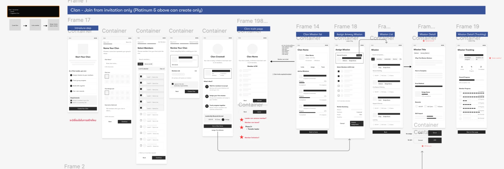
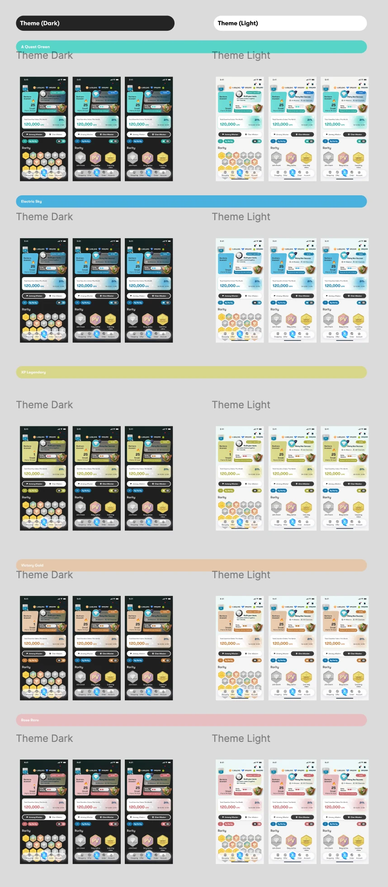

A QUEST · UI ANIMATION
Celebrate a completed mission.
An animated achievement reveal combines a dimensional badge, confetti and reward messaging in the A Quest application.
Open videoGAMIFICATION · APPLICATION · PRODUCT DESIGN
From early concepts to a gamification experience with missions, clans, and rewards.
I worked on A Quest from the beginning of the project — researching user needs, gathering requirements, developing concepts, and testing designs with users. The work progressed from low-fidelity flows to high-fidelity UI, including light and dark themes and multiple color directions.
HIGH-FIDELITY UI · MOTION
The interface brings daily missions, clan participation, streaks, progress, and collectible badges into the application experience.
Light and dark explorations keep the same core content and interaction structure while adapting background, surface, and text colors.
Open full-size videoMY DESIGN PROCESS
Conducted user research and gathered requirements with stakeholders to understand needs, pain points, and the intended application experience.
Mapped user flows and developed low-fidelity concepts to explore screen structure, interaction steps, and feature requirements.
Developed detailed application interfaces and prototypes, exploring light and dark themes alongside multiple color palettes.
Tested concepts and prototypes with users, then refined the designs based on their feedback.
LOW-FIDELITY · CONCEPT & USER FLOWS
The wireframes explore clan creation, member selection, invitations, mission assignment, and progress tracking. They make the sequence of screens and open interaction questions visible before detailed visual design.

VISUAL EXPLORATION · LIGHT & DARK
Five color directions — A Quest Green, Electric Sky, XP Legendary, Victory Gold, and Rose Rare — explored across light and dark themes. These studies compare visual treatments while retaining the application’s core layout.

A QUEST · MOTION DESIGN
Animation explorations for achievement moments and the application dashboard.
A QUEST · UI ANIMATION
An animated achievement reveal combines a dimensional badge, confetti and reward messaging in the A Quest application.
Open videoA QUEST · UI ANIMATION
A Quest dashboard motion study brings visual feedback to streaks, progress and collectible rewards.
Open video